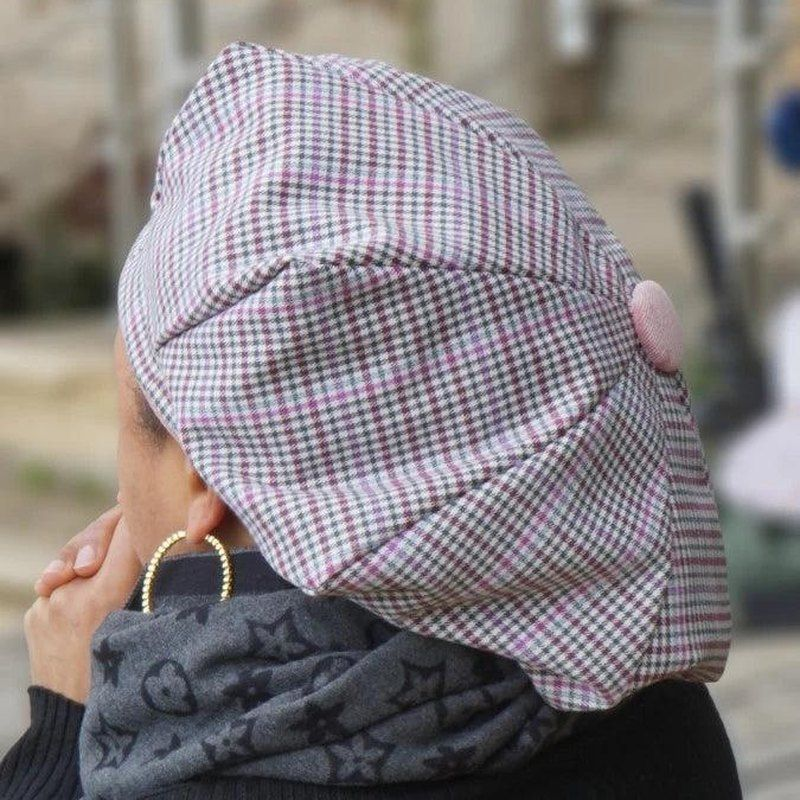

Berets
The beret guide is a valuable help for putting your beret together. Enter the beret settings, then download the pattern as A4 pages at 1:1 scale. It is made of 6 petals for a standard-size beret, or 8 petals for an XXL beret (see the photos in the beret guide), and a headband. For a man's, woman's or child's beret: the pattern is calculated from your head circumference, so no size chart is needed. Everything is calculated in your browser; none of your data is sent to me.


Settings
Seam allowance
Print calibration
The one-page PDF has all the pieces at 1:1 scale, without being split into A4 sheets, to be projected onto the fabric (for example with Pattern Projector). The 5 × 5 cm square is used to calibrate the projection.
To print at the right scale and check the 5 × 5 cm test square, see Printing correctly.
Dimensions in cm, measured on the sewing line (without the seam allowance).
Calculated independently of Seamly2D (reprogrammed from a parametric pattern). Always make a paper test before cutting the fabric.
New: the Basque beret, centred or asymmetric, with a one-piece side, which can fall naturally to one side.
A problem with a pattern? Click “Copy my settings”, then paste them into your message through “Give feedback” at the bottom of the page. Nothing is sent automatically. The form is anonymous: include your email address if you would like a reply.